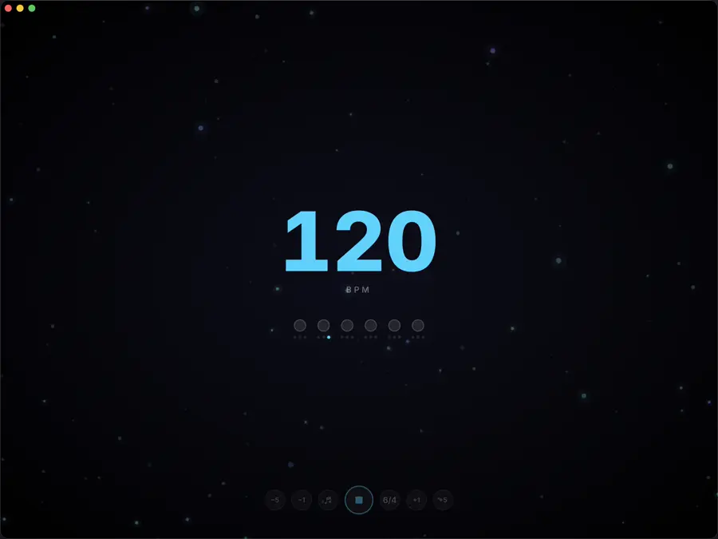

The metronome you'll actually want open for two hours.
Sub-millisecond Rust timing under the hood. Ten full themes and seven beat-reactive fullscreen visuals on top. Free, open source, and it never phones home.



Turn the room into the metronome.
Cosmos, gravity, rain, warp, sweep, pulse, focus — seven fullscreen visuals that move on the beat, in whichever theme you picked. Prop the laptop up across the room and stop looking at numbers.
Someone in the room who notices you drag.
It listens while you play, scores the session, tells you whether you rushed or dragged and by how much, then adapts tomorrow's tempo to match. All on your machine.
60 to 135 without touching the mouse.
Linear, zigzag or adaptive ramps. Countdown, cyclic repeat, and presets that save the whole exercise.
A footswitch, and you never look up.
Map any MIDI CC, note or program change. Full rebindable hotkeys. An always-on-top widget over your DAW.
Stop skipping the metronome.
macOS (Apple Silicon & Intel), Windows and Linux. Version 0.6.0.